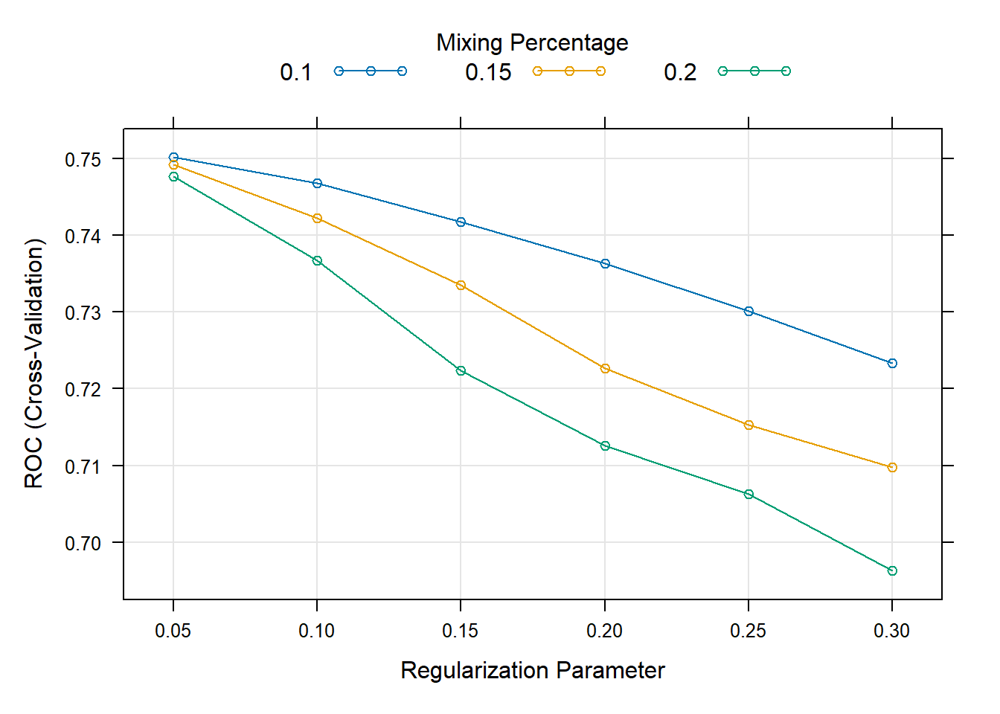

Supervised learning
In this chapter, we will move beyond statistical regression, and introduce some of the popular machine learning methods.
In the first code chunk, we load necessary R libraries that will be utilized throughout the chapter for various machine learning methods and data visualization.
Read previously saved data
The second chunk is dedicated to reading previously saved data and formulas from specified file paths, ensuring that the dataset and predefined formulas are available for subsequent analyses.
Continuous outcome
Cross-validation LASSO

In this code chunk, we implement a machine learning model training process with a focus on utilizing cross-validation and tuning parameters to optimize the model. Cross-validation is a technique used to assess how well the model will generalize to an independent dataset by partitioning the original dataset into a training set to train the model, and a test set to evaluate it. Here, we specify that we are using a particular type of cross-validation, denoted as “cv”, and that we will be creating 5 folds (or partitions) of the data, as indicated by number = 5.
The model being trained is specified to use a method known as “glmnet”, which is capable of performing lasso, ridge, and elastic net regularization regressions. Tuning parameters are crucial in controlling the behavior of our learning algorithm. In this instance, we specify lambda and alpha as our tuning parameters, which control the amount of regularization applied to the model and the mixing percentage between lasso and ridge regression, respectively. The tuneGrid argument is used to specify the exact values of alpha and lambda that the model should consider during training. The verbose = FALSE argument ensures that additional model training details are not printed during the training process. Finally, the trained model is stored in an object for further examination and use.
Show the code
ctrl <- trainControl(method = "cv", number = 5)
fit.cv.con <- train(out.formula1,
trControl = ctrl,
data = ObsData, method = "glmnet",
lambda= 0,
tuneGrid = expand.grid(alpha = 1, lambda = 0),
verbose = FALSE)
fit.cv.con
#> glmnet
#>
#> 5735 samples
#> 50 predictor
#>
#> No pre-processing
#> Resampling: Cross-Validated (5 fold)
#> Summary of sample sizes: 4589, 4588, 4587, 4588, 4588
#> Resampling results:
#>
#> RMSE Rsquared MAE
#> 25.08162 0.05943728 15.17943
#>
#> Tuning parameter 'alpha' was held constant at a value of 1
#> Tuning
#> parameter 'lambda' was held constant at a value of 0Cross-validation Ridge
Subsequent code chunks explore Ridge regression and Elastic Net, employing similar methodologies but adjusting tuning parameters accordingly.
Show the code
ctrl <- trainControl(method = "cv", number = 5)
fit.cv.con <-train(out.formula1,
trControl = ctrl,
data = ObsData, method = "glmnet",
lambda= 0,
tuneGrid = expand.grid(alpha = 0, lambda = 0),
verbose = FALSE)
fit.cv.con
#> glmnet
#>
#> 5735 samples
#> 50 predictor
#>
#> No pre-processing
#> Resampling: Cross-Validated (5 fold)
#> Summary of sample sizes: 4588, 4587, 4588, 4589, 4588
#> Resampling results:
#>
#> RMSE Rsquared MAE
#> 25.17466 0.05556026 15.22318
#>
#> Tuning parameter 'alpha' was held constant at a value of 0
#> Tuning
#> parameter 'lambda' was held constant at a value of 0Binary outcome
Cross-validation LASSO
We then shift to binary outcomes, exploring LASSO and Ridge regression with similar implementations but adjusting for the binary nature of the outcome variable.
Show the code
ctrl<-trainControl(method = "cv", number = 5,
classProbs = TRUE,
summaryFunction = twoClassSummary)
fit.cv.bin<-train(out.formula2,
trControl = ctrl,
data = ObsData,
method = "glmnet",
lambda= 0,
tuneGrid = expand.grid(alpha = 1, lambda = 0),
verbose = FALSE,
metric="ROC")
fit.cv.bin
#> glmnet
#>
#> 5735 samples
#> 50 predictor
#> 2 classes: 'No', 'Yes'
#>
#> No pre-processing
#> Resampling: Cross-Validated (5 fold)
#> Summary of sample sizes: 4588, 4588, 4588, 4588, 4588
#> Resampling results:
#>
#> ROC Sens Spec
#> 0.7539886 0.4684678 0.8549188
#>
#> Tuning parameter 'alpha' was held constant at a value of 1
#> Tuning
#> parameter 'lambda' was held constant at a value of 0- Not okay to select variables from a shrinkage model, and then use them in a regular regression
Cross-validation Ridge
Show the code
ctrl<-trainControl(method = "cv", number = 5,
classProbs = TRUE,
summaryFunction = twoClassSummary)
fit.cv.bin<-train(out.formula2, trControl = ctrl,
data = ObsData, method = "glmnet",
lambda= 0,
tuneGrid = expand.grid(alpha = 0,
lambda = 0),
verbose = FALSE,
metric="ROC")
fit.cv.bin
#> glmnet
#>
#> 5735 samples
#> 50 predictor
#> 2 classes: 'No', 'Yes'
#>
#> No pre-processing
#> Resampling: Cross-Validated (5 fold)
#> Summary of sample sizes: 4589, 4588, 4587, 4588, 4588
#> Resampling results:
#>
#> ROC Sens Spec
#> 0.7527498 0.4625026 0.8519672
#>
#> Tuning parameter 'alpha' was held constant at a value of 0
#> Tuning
#> parameter 'lambda' was held constant at a value of 0Cross-validation Elastic net
- Alpha = mixing parameter
- Lambda = regularization or tuning parameter
- We can use
expand.gridfor model tuning
Show the code
ctrl<-trainControl(method = "cv", number = 5,
classProbs = TRUE,
summaryFunction = twoClassSummary)
fit.cv.bin<-train(out.formula2, trControl = ctrl,
data = ObsData, method = "glmnet",
tuneGrid = expand.grid(alpha = seq(0.1,.2,by = 0.05),
lambda = seq(0.05,0.3,by = 0.05)),
verbose = FALSE,
metric="ROC")
fit.cv.bin
#> glmnet
#>
#> 5735 samples
#> 50 predictor
#> 2 classes: 'No', 'Yes'
#>
#> No pre-processing
#> Resampling: Cross-Validated (5 fold)
#> Summary of sample sizes: 4589, 4587, 4588, 4589, 4587
#> Resampling results across tuning parameters:
#>
#> alpha lambda ROC Sens Spec
#> 0.10 0.05 0.7506071 0.3701097490 0.8968301
#> 0.10 0.10 0.7473587 0.2742318186 0.9365934
#> 0.10 0.15 0.7427385 0.1753688135 0.9674894
#> 0.10 0.20 0.7374742 0.0914089602 0.9868355
#> 0.10 0.25 0.7309831 0.0223584312 0.9959703
#> 0.10 0.30 0.7245844 0.0009937904 0.9994624
#> 0.15 0.05 0.7496521 0.3502388800 0.9067699
#> 0.15 0.10 0.7432272 0.2170956631 0.9527131
#> 0.15 0.15 0.7345819 0.1063121119 0.9836115
#> 0.15 0.20 0.7238424 0.0188832512 0.9957018
#> 0.15 0.25 0.7166706 0.0004962779 1.0000000
#> 0.15 0.30 0.7110471 0.0000000000 1.0000000
#> 0.20 0.05 0.7481001 0.3283853684 0.9169806
#> 0.20 0.10 0.7377727 0.1639433107 0.9680284
#> 0.20 0.15 0.7234677 0.0382541387 0.9908656
#> 0.20 0.20 0.7140924 0.0009937904 0.9994627
#> 0.20 0.25 0.7074353 0.0000000000 1.0000000
#> 0.20 0.30 0.6970420 0.0000000000 1.0000000
#>
#> ROC was used to select the optimal model using the largest value.
#> The final values used for the model were alpha = 0.1 and lambda = 0.05.
plot(fit.cv.bin)
Decision tree
Decision trees are then introduced and implemented, with visualizations and evaluation metrics provided to assess their performance.
- Decision tree
- Referred to as Classification and regression trees or CART
- Covers
- Classification (categorical outcome)
- Regression (continuous outcome)
- Flexible to incorporate non-linear effects automatically
- No need to specify higher order terms / interactions
- Unstable, prone to overfitting, suffers from high variance
Simple CART
Show the code

Show the code
print(cart.fit)
#> n= 5735
#>
#> node), split, n, loss, yval, (yprob)
#> * denotes terminal node
#>
#> 1) root 5735 2013 Yes (0.3510026 0.6489974)
#> 2) DASIndex>=24.92383 1143 514 No (0.5503062 0.4496938)
#> 4) DASIndex>=29.14648 561 199 No (0.6452763 0.3547237) *
#> 5) DASIndex< 29.14648 582 267 Yes (0.4587629 0.5412371) *
#> 3) DASIndex< 24.92383 4592 1384 Yes (0.3013937 0.6986063) *
require(rattle)
require(rpart.plot)
require(RColorBrewer)
fancyRpartPlot(cart.fit, caption = NULL)AUC
Show the code
require(pROC)
obs.y2<-ObsData$Death
pred.y2 <- as.numeric(predict(cart.fit, type = "prob")[, 2])
rocobj <- roc(obs.y2, pred.y2)
#> Setting levels: control = No, case = Yes
#> Setting direction: controls < cases
rocobj
#>
#> Call:
#> roc.default(response = obs.y2, predictor = pred.y2)
#>
#> Data: pred.y2 in 2013 controls (obs.y2 No) < 3722 cases (obs.y2 Yes).
#> Area under the curve: 0.5912
plot(rocobj)
Complex CART
More variables
Show the code
out.formula2
#> Death ~ Disease.category + Cancer + Cardiovascular + Congestive.HF +
#> Dementia + Psychiatric + Pulmonary + Renal + Hepatic + GI.Bleed +
#> Tumor + Immunosupperssion + Transfer.hx + MI + age + sex +
#> edu + DASIndex + APACHE.score + Glasgow.Coma.Score + blood.pressure +
#> WBC + Heart.rate + Respiratory.rate + Temperature + PaO2vs.FIO2 +
#> Albumin + Hematocrit + Bilirubin + Creatinine + Sodium +
#> Potassium + PaCo2 + PH + Weight + DNR.status + Medical.insurance +
#> Respiratory.Diag + Cardiovascular.Diag + Neurological.Diag +
#> Gastrointestinal.Diag + Renal.Diag + Metabolic.Diag + Hematologic.Diag +
#> Sepsis.Diag + Trauma.Diag + Orthopedic.Diag + race + income +
#> RHC.use
require(rpart)
cart.fit <- rpart(out.formula2, data = ObsData)CART Variable importance
Show the code
cart.fit$variable.importance
#> DASIndex Cancer Tumor age
#> 123.2102455 33.4559400 32.5418433 24.0804860
#> Medical.insurance WBC edu Cardiovascular.Diag
#> 14.5199953 5.6673997 3.7441554 3.6449371
#> Heart.rate Cardiovascular Trauma.Diag PaCo2
#> 3.4059248 3.1669125 0.5953098 0.2420672
#> Potassium Sodium Albumin
#> 0.2420672 0.2420672 0.1984366AUC
Show the code
require(pROC)
obs.y2<-ObsData$Death
pred.y2 <- as.numeric(predict(cart.fit, type = "prob")[, 2])
rocobj <- roc(obs.y2, pred.y2)
#> Setting levels: control = No, case = Yes
#> Setting direction: controls < cases
rocobj
#>
#> Call:
#> roc.default(response = obs.y2, predictor = pred.y2)
#>
#> Data: pred.y2 in 2013 controls (obs.y2 No) < 3722 cases (obs.y2 Yes).
#> Area under the curve: 0.5981
plot(rocobj)
Cross-validation CART
Show the code
set.seed(504)
require(caret)
ctrl<-trainControl(method = "cv", number = 5,
classProbs = TRUE,
summaryFunction = twoClassSummary)
# fit the model with formula = out.formula2
fit.cv.bin<-train(out.formula2, trControl = ctrl,
data = ObsData, method = "rpart",
metric="ROC")
fit.cv.bin
#> CART
#>
#> 5735 samples
#> 50 predictor
#> 2 classes: 'No', 'Yes'
#>
#> No pre-processing
#> Resampling: Cross-Validated (5 fold)
#> Summary of sample sizes: 4587, 4589, 4587, 4589, 4588
#> Resampling results across tuning parameters:
#>
#> cp ROC Sens Spec
#> 0.007203179 0.6304911 0.2816488 0.9086574
#> 0.039741679 0.5725283 0.2488649 0.8981807
#> 0.057128664 0.5380544 0.1287804 0.9473284
#>
#> ROC was used to select the optimal model using the largest value.
#> The final value used for the model was cp = 0.007203179.
# extract results from each test data
summary.res <- fit.cv.bin$resample
summary.resEnsemble methods (Type I)
We explore ensemble methods, specifically bagging and boosting, through implementation and evaluation in the context of binary outcomes.
Training same model to different samples (of the same data)
Cross-validation bagging
- Bagging or bootstrap aggregation
- independent bootstrap samples (sampling with replacement, B times),
- applies CART on each i (no prunning)
- Average the resulting predictions
- Reduces variance as a result of using bootstrap
Show the code
set.seed(504)
require(caret)
ctrl<-trainControl(method = "cv", number = 5,
classProbs = TRUE,
summaryFunction = twoClassSummary)
# fit the model with formula = out.formula2
fit.cv.bin<-train(out.formula2, trControl = ctrl,
data = ObsData, method = "bag",
bagControl = bagControl(fit = ldaBag$fit,
predict = ldaBag$pred,
aggregate = ldaBag$aggregate),
metric="ROC")
#> Warning: executing %dopar% sequentially: no parallel backend registered
fit.cv.bin
#> Bagged Model
#>
#> 5735 samples
#> 50 predictor
#> 2 classes: 'No', 'Yes'
#>
#> No pre-processing
#> Resampling: Cross-Validated (5 fold)
#> Summary of sample sizes: 4587, 4589, 4587, 4589, 4588
#> Resampling results:
#>
#> ROC Sens Spec
#> 0.7506666 0.4485809 0.8602811
#>
#> Tuning parameter 'vars' was held constant at a value of 63- Bagging improves prediction accuracy
- over prediction using a single tree
- Looses interpretability
- as this is an average of many diagrams now
- But we can get a summary of the importance of each variable
Bagging Variable importance
Show the code
caret::varImp(fit.cv.bin, scale = FALSE)
#> ROC curve variable importance
#>
#> only 20 most important variables shown (out of 50)
#>
#> Importance
#> age 0.6159
#> APACHE.score 0.6140
#> DASIndex 0.5962
#> Cancer 0.5878
#> Creatinine 0.5835
#> Tumor 0.5807
#> blood.pressure 0.5697
#> Glasgow.Coma.Score 0.5656
#> Disease.category 0.5641
#> Temperature 0.5584
#> DNR.status 0.5572
#> Hematocrit 0.5525
#> Weight 0.5424
#> Bilirubin 0.5397
#> income 0.5319
#> Immunosupperssion 0.5278
#> RHC.use 0.5263
#> Dementia 0.5252
#> Congestive.HF 0.5250
#> Hematologic.Diag 0.5250Cross-validation boosting
- Boosting
- sequentially updated/weighted bootstrap based on previous learning
Show the code
set.seed(504)
require(caret)
ctrl<-trainControl(method = "cv", number = 5,
classProbs = TRUE,
summaryFunction = twoClassSummary)
# fit the model with formula = out.formula2
fit.cv.bin<-train(out.formula2, trControl = ctrl,
data = ObsData, method = "gbm",
verbose = FALSE,
metric="ROC")
fit.cv.bin
#> Stochastic Gradient Boosting
#>
#> 5735 samples
#> 50 predictor
#> 2 classes: 'No', 'Yes'
#>
#> No pre-processing
#> Resampling: Cross-Validated (5 fold)
#> Summary of sample sizes: 4587, 4589, 4587, 4589, 4588
#> Resampling results across tuning parameters:
#>
#> interaction.depth n.trees ROC Sens Spec
#> 1 50 0.7218938 0.2145970 0.9505647
#> 1 100 0.7410292 0.2980581 0.9234228
#> 1 150 0.7483014 0.3487142 0.9030028
#> 2 50 0.7414513 0.2960631 0.9263816
#> 2 100 0.7534264 0.3869684 0.8917212
#> 2 150 0.7575826 0.4187512 0.8777477
#> 3 50 0.7496078 0.3626125 0.9070358
#> 3 100 0.7579645 0.4078244 0.8764076
#> 3 150 0.7637074 0.4445909 0.8702298
#>
#> Tuning parameter 'shrinkage' was held constant at a value of 0.1
#>
#> Tuning parameter 'n.minobsinnode' was held constant at a value of 10
#> ROC was used to select the optimal model using the largest value.
#> The final values used for the model were n.trees = 150, interaction.depth =
#> 3, shrinkage = 0.1 and n.minobsinnode = 10.Ensemble methods (Type II)
We introduce the concept of Super Learner, providing external resources for further exploration.
Training different models on the same data
Super Learner
- Large number of candidate learners (CL) with different strengths
- Parametric (logistic)
- Non-parametric (CART)
- Cross-validation: CL applied on training data, prediction made on test data
- Final prediction uses a weighted version of all predictions
- Weights = coef of Observed outcome ~ prediction from each CL
Steps
Refer to this tutorial for steps and examples!
Video content (optional)
For those who prefer a video walkthrough, feel free to watch the video below, which offers a description of an earlier version of the above content.